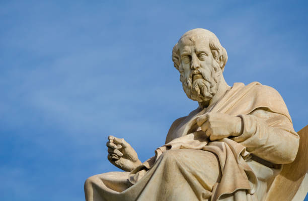

Welcome to the Mathematical World!
Plato (c. 428–348 BCE)
Greek Philosopher, Founder of the Academy, and Teacher of Aristotle
Plato (c. 428–348 BCE) Plato was a student of Socrates and the teacher of Aristotle. He founded the Academy in Athens, the first institution of higher learning in the Western world. His most famous works include The Republic, where he outlines his ideas on justice and ideal government. Plato believed in the world of Forms—perfect, unchanging ideas that exist beyond the physical world.
Major Works and Dialogues
Plato wrote most of his philosophy in the form of dialogues, where characters (often Socrates) explore philosophical questions through conversation. Key works include:
- The Republic — political philosophy, justice, the philosopher-king, and the tripartite soul.
- Phaedo — on the immortality of the soul and Socrates’ final arguments.
- Symposium — discussions on love (eros) and the ascent to the Form of Beauty.
- Timaeus — cosmology and a model of a rationally ordered universe.
- Laws — Plato’s later, more pragmatic treatment of legislation and civic life.
The Theory of Forms and Key Ideas
Plato’s Theory of Forms holds that the visible world is an imperfect copy of a higher reality of eternal, changeless Forms (Ideas). Knowledge, for Plato, is the intellectual grasp of those Forms—true opinion grounded by rational insight. His famous Allegory of the Cave (in The Republic) illustrates how prisoners perceive shadows as reality and must be led out to grasp the light of true being and knowledge.
The Academy
Plato founded the Academy in Athens (around 387 BCE), a center for philosophical, mathematical, and scientific study. The Academy attracted students from across the Greek world and persisted as an institution of higher learning for many centuries. Plato emphasized mathematics within the Academy—famously associating mathematical training with the development of rational thought and insisting on geometry as central to philosophical education.
Plato’s Influence on Philosophy and Science
Plato’s work shaped the course of Western thought. His student Aristotle developed systematic logic and natural philosophy in part through engagement with Platonic ideas. Plato’s emphasis on the role of reason, the importance of an ordered soul and state, and the interplay between ethics and knowledge influenced later traditions such as Neoplatonism, Medieval Scholasticism, and Renaissance humanism.
Legacy
Plato’s Academy, his dialogues, and his metaphysical system left a lasting imprint on intellectual history. His insistence on philosophical inquiry, dialectic, and the search for universal truths helped establish the foundations for Western philosophy, political theory, and the role of mathematics in rational inquiry. Through his writings, Plato continues to be read, taught, and debated across the world.